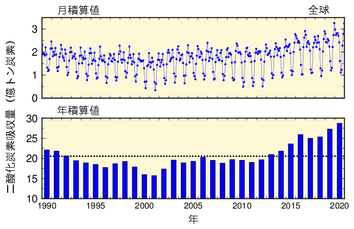
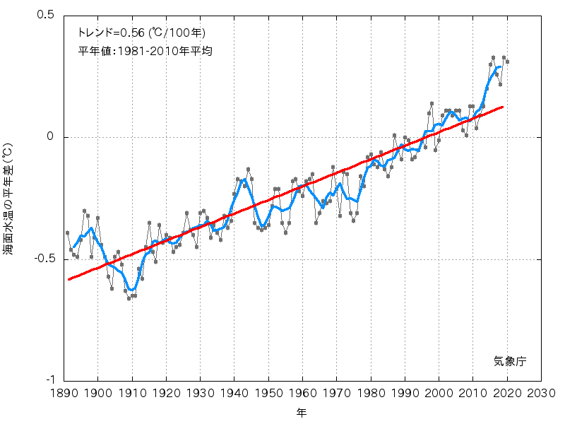
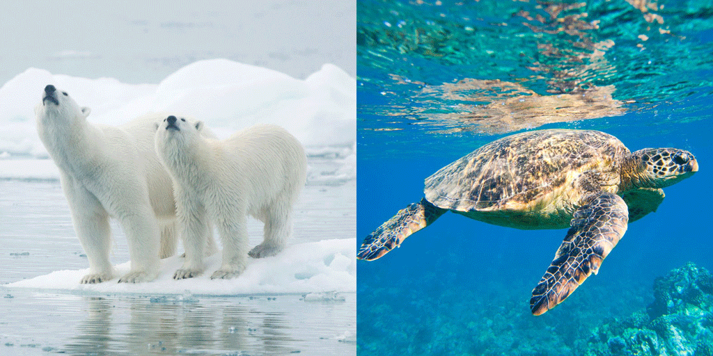
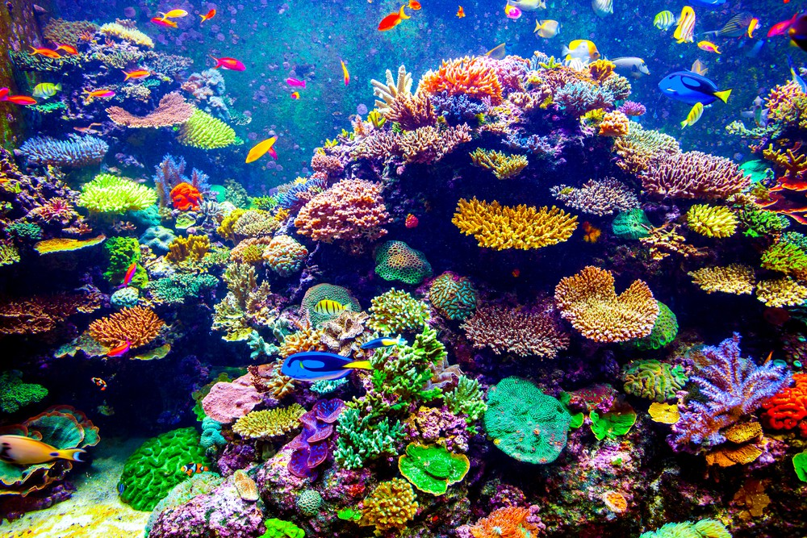

今、世界でも大きな問題になっている「地球温暖化」
温暖化による気温上昇は、陸だけでなく、海にも影響を及ぼしている。
気象庁によると、地球全体で見たとき時、海洋による二酸化炭素吸収量は、1990年から2020年までの平均は、1年あたり21億トン炭素であると記録されいる。（トン炭素：炭素の重さに換算した二酸化炭素の量）[1]
表1 大気から海洋への二酸化炭素吸収量の1990年から2020年までの月および年間の積算値（気象庁）
1990年から2020年までの30年間、10年単位の規模で変動しながら、全体として増加している。また、2020年の二酸化炭素の吸収量は29億トン炭素で、1990年以降の期間で最大となっていることがわかる。
図から読めとれるように、月積算値では、12ヶ月の中にも7月、8月のように二酸化炭素吸収率が低い月があることがわかる。この二酸化炭素吸収率は、海水温度などの変化によるものである。例えば、夏などに海水温度が高くなると、二酸化炭素のみずに対する溶解度が減少し、溶けきれなくなった二酸化炭素は表面期水中の二酸化炭素分圧を高くすることによって、海洋は、大気へ二酸化あ炭素を放出するという現象が起こる。このことにより、7月、8月の二酸化炭素吸収率は低くなる。[2]
また、年積算値では、年が経過するごとに海洋の二酸化炭素吸収率が増加していることがわかる。このように、前年度と比べ増加した年もあれば、減少している年もある。
地球温暖化の影響は、海洋にも及んでいることが上の記述でわかったと思うが、その影響で、海洋にはどのような変化があるのか調べた。
表2 海面水温上昇結果（気象庁）
測定を開始した1981年の海面水温は、-0.5に近い。しかし、海面水温は上昇し、1996年ごろには0℃を超え、2000年から2020年まで0℃以下を記録する年がなくなった。このままだと、2080年には、海面水温が0.5℃を記録し、記録し始めた1981年の海面水温との差は、＋1℃になることが懸念されている。[3]
海面水温が上昇することで、海に起こる現象が3つある。
1つ目に、海面上昇である。
水は、温めると上昇するという特徴を持っている。そのため、海面水温が上昇することにより、海全体の体積が増えることが懸念されている。また、地球温暖化により、南極などの極地の氷が溶けることにより、海面の上昇を手助けすることになる。このまま、温暖化が続くと、南太平洋にある小さい国々は高潮による影響で島が消えるなどの影響が出る。
2つ目に、自然災害の増加が考えられる。
このまま地球温暖化が続き、海面水温の上昇が止まらなければ、海からの水蒸気の発生を抑えることができず、雲の作成を促すことになり、大雨や台風などを招き、農作業などに甚大な影響を与える。
3つ目に、海洋生態系の崩壊が考えられる。
海洋水温の上昇が敏感な海洋生態に影響を与えていると考えられる。例えば、海面水温の上昇により、サンゴ礁が死滅し、そこから海洋関係の食物連鎖が崩れると、人間が食用としているマグロやサンマなどの回遊魚に影響を及ぼしかねない。
温暖化の影響を大きく受けている海洋生物として取り上げたのは、ホッキョクグマとウミガメである。この2種類の海洋生物に温暖化の影響がどのように及ぼされているのか、見ていきたいと思う。
まず、ホッキョクグマへの英きゅについてであるが、地球温暖化以前に海洋汚染の問題がホッキョクグマの繁殖を妨げていることがわかった。
海洋汚染が、なぜ人の住むところから離れている北極で海洋汚染？となるかもしれない。だが、遠くのアメリカなどの地域で撒かれたの農薬などは、土壌にとどまらず、気流に乗り北極圏にやってくる。また、工場排水が海に流れ出し、汚染された海水などは、海流とともに北極圏の海にまで運ばれて行きます。そのため、ほかの海より汚れている可能性がある。
それがなぜ、ホッキョクグマの絶滅に関わっているのかというと、海に溶けた工場排水は、植物プランクトンなどの体内に入り、そこから、生態系ピラミッドで上に君臨している生物に食されていく。そのため、生態系ピラミッドの上に位置する生物ほど生物濃縮という現象がが最も起きる。ホッキョクグマは、海洋生物の中では、上のほうに位置する生物であるから、生物濃縮が起こり、体内に化学物質をため込んでしまい、絶滅してしまう。
そのような現象だけでなく、地球温暖化の影響で北極の氷が溶け、住む場所がなくなり、繁殖できない状況になってしまうことが、ホッキョクグマの絶滅を促進させてしまっている。[4]
次に、地球温暖化がウミガメに及ぼしている影響についてだ。
そもそも、ウミガメの性比は、生まれてくるときの周りの温度によって決まる。ウミガメの卵から生まれる幼いカメには、温度が高いとメスが生まれ、低いとオスが生まれるという仕組みがある。
インド洋南西のモザンビーク海峡にある無人島群には、5種のウミガメが生息する。そこでは、緯度の高さによってウミガメが産卵する時期が異なる。そのため、今までは、ほぼ同じ性比でオスとメスが生まれていたのが、温暖化の影響で地球の温度が高くなると、メスが大半を占めて生まれてくる可能性が考えられる。この現象が起こると、ウミガメは繁殖しずらくなり、絶滅に近づく。[5]
また、温暖化が続くと、高潮が続く可能性が考えられている。高潮時にカメの産卵場所に海水が入ってしまうと、卵がやられ、そもそも子カメが生まれてこない状況になり、絶滅に近づく。
海洋植物に対して、地球温暖化が及ぼす影響についてである。ここでも、温暖化の影響を大きく受けている海洋植物として、サンゴ礁とプランクトンを取り上げどのような影響が出ていのか見ていく。
サンゴ礁と言えば、いろんな形があり、いろんな色がある。また、いろんな種類の魚の住処だったり、産卵場所であったりする。ある映画では、カクレクマノミの住処として有名になった。
そのほかにもサンゴ礁の役割は、海の二酸化炭素濃度を調節することにある。サンゴ礁が海の二酸化炭素濃度を調節してくれないと、他の海洋生物には温暖化などからの影響が出て大きく生態系が変動する可能性がある。それを食い止めてくれているのがサンゴ礁である。よって、サンゴ礁は、海にとって必要不可欠な存在である。
しかし、サンゴ礁にも地球温暖化の影響が出ていて、最悪の場合、海からサンゴ礁がなくなる可能性がある。
そこで、温暖化がサンゴ礁に及ぼす影響は、３つある。
1つ目は、海水温の上昇によるサンゴの白化である。サンゴ礁は、褐虫藻という単細胞藻類の色でいろいろな色が出ていることがわかった。しかし、温暖化の影響で海水温が上昇し、サンゴ礁から褐中藻が出てくると、サンゴ礁が白色化します。これが、サンゴ礁の白化です。そもそもサンゴ礁は、この褐中藻から栄養を受け取っていたため、なくなってしまうと栄養が受け取れず、死滅してしまいます。
2つ目は、台風の巨大化によるサンゴ礁の破壊である。先に示したように、温暖化が進むと自然災害の増加が懸念されている。その中でサンゴ礁に影響を及ぼしているのが台風である。今でも、台風が通過した後、テーブル状に生えているサンゴ礁は、根本から折れてしまっている。しかし、このまま温暖化が促進し、台風が巨大化すると、折れやすかったテーブル状のサンゴ礁だけでなくドーム状のサンゴ礁も折れ、陸まで上がってくる可能性がある。このように、サンゴ礁の生息している場所に直で影響が出る可能性がある。
3つ目は、海水の酸性化におけるサンゴ礁の衰退の恐れである。大気中に増加した二酸化炭素が海水に溶けることで、海水のpHを低下させアルカリ性から中性に変化させる現象のことを「海洋の酸性化」という。これは、石灰化にに必要な炭酸イオン濃度を下げるため、炭酸カルシウムを主成分といているサンゴなどの成長を妨げることがある。[5]
サンゴに出ている影響には、人にあまり影響が出ないように聞こえるかもしれない。しかし、サンゴに出る影響の2つ目が続くと、地震が起こり津波が来た時、海水中で津波の勢いをなくしてくれるものがなくなる。また、サンゴを住処にしている小魚が、我々が食している小魚であったり、もう少し大きい魚の餌となる対象であった場合、サンゴ礁がなくなり、小魚の住処が奪われ、小魚の数が減ると、それを餌として食べていた魚の数も減るということになる。また、マイクロプラスチックや私たちの捨てるゴミの影響で海水汚染が促進し、私たちが食べている種類の魚が減っていくと、私たちは、魚が食べれなくなる。じゃあ、肉を食べればいいという声も上がるかもしれないが、それには人間に大きに影響を及ぼしてしまう。
このように、今地球の温度が上がっていることが、あまり感じられないと思うが、よく調べたりしてみると、温暖化の影響が出ていることがわかる。そして、このことを調べてどのように行動するかが大事になってくる。しかし、温暖化の影響は大気中における二酸化炭素の濃度が関係している。
現状として、地球温暖化などの気候変動に対する取り組みは、世界各国が温室効果ガスの削減という漠然としたものを目的としている。しかし、各国で海の現状や海に生息している生植物、海水温度は、異なる。よって、その国よって対策なども変化していくと考えられる。
[1]気象庁 海洋による二酸化炭素吸収量（全球）
[2]気象庁 海洋による二酸化炭素の吸収・放出の分布
[3]気象庁 海面水温の長期変化傾向
[4]WWFジャパン ホッキョクグマの生態と、迫る危機
[5]ナショナルジオグラフィック 温暖化でウミガメの性比に異変？
[1]3.サンゴ礁の危機：2021年12月07日